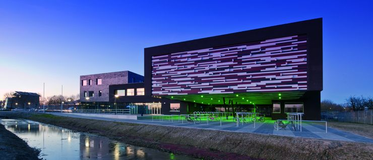
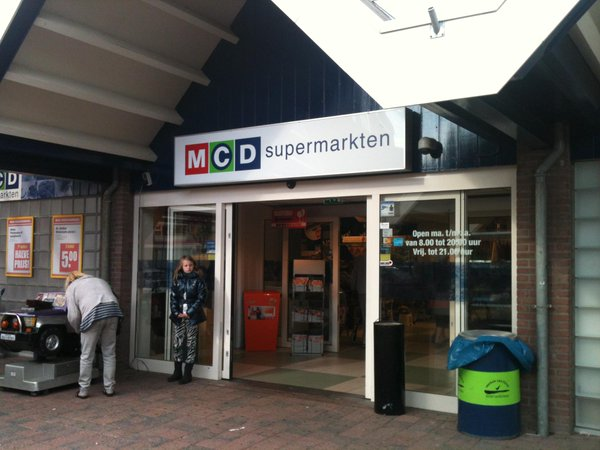

Ik ben Mats Menges, ik ben 16 jaar oud en kom uit Leerdam.
In mijn vrije tijd speel ik graag games achter mijn computer. Ook speel ik piano.
Ik heb geen speciale doelen die ik wil bereiken.
Ik had geen foto's van mijzelf dus ik heb deze maar snel genomen.
Ik begon mijn middelbare school op het gymnasium, maar doordat ik geen motivatie heb/had, ben ik dus uiteindelijk hier terecht gekomen.
Ik ben 'goed' in rekenen, wiskunde en engels. Hiervoor sta ik in totaal dus drie negens op mijn diploma.
Ik studeer op het Da Vinci college in Gorinchem. Ik volg een opleiding in applicatie ontwikkeling.
Ik heb deze opleiding gekozen omdat het mij wel interessant leek.
Ik weet niet eens zeker of ik deze opleiding wel leuk vind, maar voor nu is het wel ok.
Zelf doe ik graag zo min mogelijk werk buiten school, wat soms nog wel tot problemen kan leiden. Dit is één van mijn ontwikkelpunten die ik liever niet verander.
Dit is het logo van het Da Vinci college.
Klik hier om naar de site van het Da Vinci college te gaan.

Dit is de HAVO locatie van mijn middelbare school: Lek en Linge.
Klik hier om naar de site van Lek en Linge te gaan.
Zoals je misschien al hebt kunnen raden, mijn ervaring met school is niet geweldig.
Ik heb er nog steeds hetzelfde bloedhekel aan als sinds de dag dat ik er mee begon.
Ik zie geen duidelijk doel in (de middelbare) school en zie het als tijdverspilling. Dit komt omdat je toch 95% van alles dat je leert de volgende week vergeet.
Alles waar je school voor nodig hebt is een diploma. Ik kom hier niet voor een goede schoolervaring, en dat is één van mijn ontwikkelpunten.
Ik werk bij de MCD (supermarkt) in Leerdam, voor de rest heb ik geen werkervaring.
Je kunt je ook wel voorstellen dat je niet echt ontzettend veel leert daar.
Er is niet echt super veel interessants aan een supermarktbaantje, en de enige toepassing van AO naar mijn werk die ik kan zien is het maken van een website.
Andersom is er letterlijk niets wat ik kan opnoemen, mijn werk is puur fysiek en vereist geen kennis.

Dit is de ingang van de MCD in Leerdam.